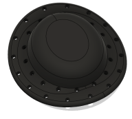
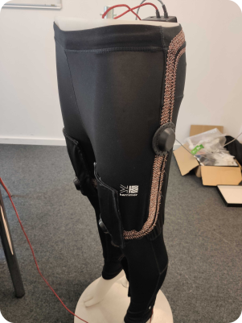
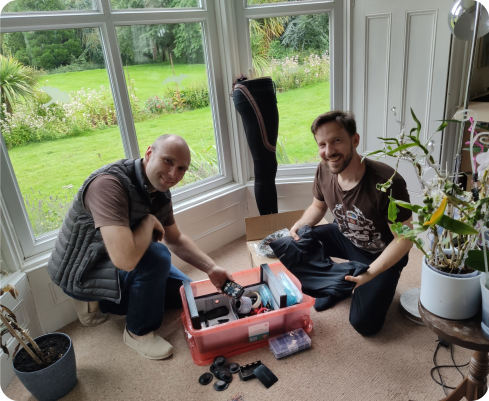
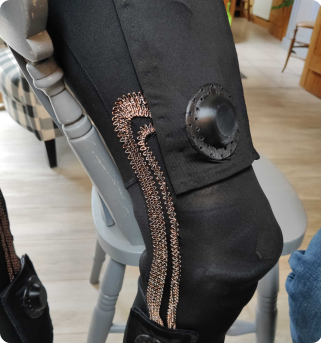
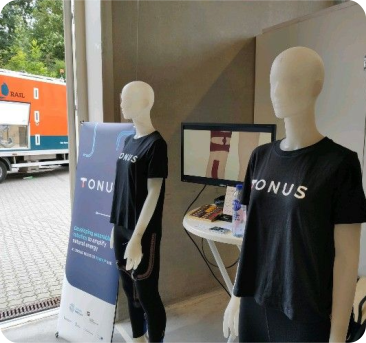
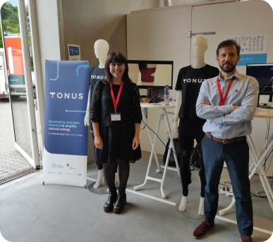
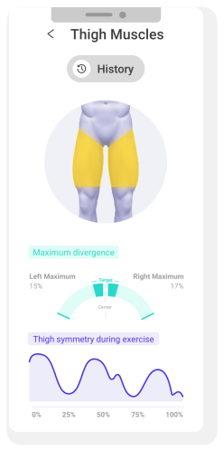
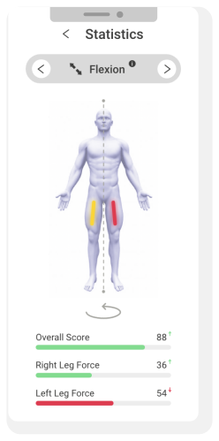
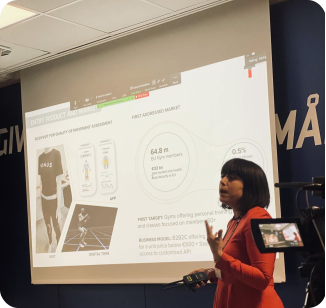
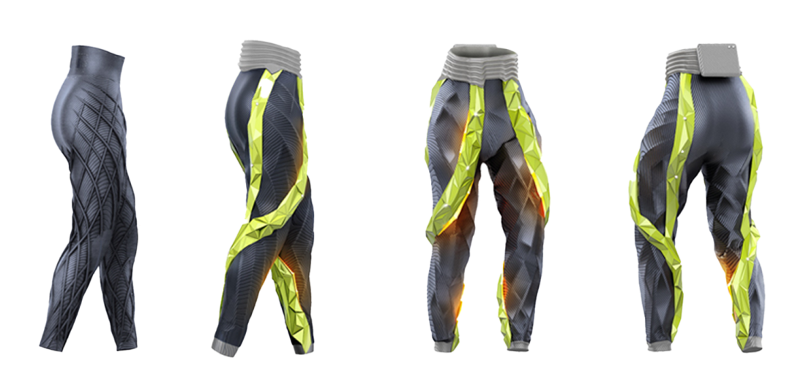

Prototype
One of my tasks whilst working at Tonus, was to help
create prototypes and develop hardware
that would be used in their legging suit. This involved
designing and iterating parts
that would be used on the leggings, as well as
researching and procuring components.
In this task I worked in a team with an
electrical engineer and a
software engineer to develop
a proof of concept
semi-functional prototype to
demonstrate the capabilities of concept.
Sensor Cover
I was tasked with developing a
cover for sensors that
would be placed along the leggings. This was the final design
that was decided on after
many iterations. The
design has a
presentable and discrete housing
which could be easily
3D printed (the CAD model
can be seen below).
Furthermore, this design allows for
USB access to code the
sensors, and an
easy and hidden way to
attach the sensor to the wires.


Wire Layout
Another task of mine was to
plan the layout of how all
the sensors would be connected with the wires along the legs, and
to a hub at the back.
In the first photo is my plan for the layout,
minimising cable and
optimising
structural integrity, this
was a Lo-Fi prototype, so I used cardboard to act as the sensors,
and stretchy fabric for the wires. In the second and third photos
you can see this same layout but now with the
wires and sensors on the
prototype leggings, along with the sensor housing I designed.




Use Case
The prototype leggings that I had helped develop for Tonus proved
very useful as they were able to
show and explain the technology
at fairs as can be seen in the photos below.


App
Alongside working on the leggings, I was tasked with designing the
user flow and
design of an accompanying
app. The app would be used by a user whilst wearing the suit to
track progress, and
view data from the suit. The
app must be simple enough to be used by someone with no
physiotherapy knowledge, but also have detailed information
available for trainers to look at. For this reason I was working
in collaboration with a
physiotherapist.
Development
To the right are some of the screens from the finished design
of the app - after
many iterations. The
process involved looking at what
data was coming from the
suit, and turning this into
easy to understand and informative infographics.
App screens were then commented on by a
physiotherapist to
provide specific advice from a medical standpoint so that the
user experience is
optimal.
The process of developing the app screens, started with a
basic design, with the aim of showing all the data and having
a thought through
user journey. The app was
developed in Adobe XD, as
it allowed for
quick iterations, and the
ability to quickly
prototype how it would
look. Iterations mostly focused on improving the user
experience, for example
removing unnecessary screens,
and improving the statistics to be simple for a user, whilst
also informative to a personal trainer. Refinements to the UI
made the app more
elegant and intuitive.


Use Case
The app wireframe that I
developed for Tonus was to be used alongside the suit, to
complement its
functionality and allow for an improved user experience.
Therefore, the app screens I developed proved very useful as a
tool to explain the
product Tonus is planning to create in marketing material.
As can be seen here on the right, Marianna the CEO of Tonus is
giving a pitch about
their products, and is using the app screens to explain the
product ecosystem that
will be developed.


CAD
A large project of mine was to create a
CAD model of a ‘visionary’
pair of leggings to display the technology and explore how it
could be implemented. To do this, firstly I conducted
investigations in
OpenSim, and spoke with
physiotherapists to explore
which muscle groups would benefit most from actuation, and what
size/position/shape of
actuator would work best. Then I worked in collaboration with a
fashion designer to develop
an attractive model whilst also being technically accurate.
Development
In this project, I was using the previous CAD model as a reference
(shown below), however I was to
build upon this as it is
purely artistic not functional.
My CAD model was to
implement the actuator technology
that Tonus wanted to use, and to find out how to
implement elegantly into a
pair of leggings. Firstly I researched using OpenSim, a
muscle simulation software,
as to which muscles were used most in a walking cycle, and the
effect of these muscles. After speaking with a physiotherapist and
determining where a
common sites for injuries
are, I used OpenSim to determine specifically which movement used
the muscles of interest. From here I was able to include actuation
across certain areas in OpenSim, and so was able to work out the
best place for an actuator to
decrease the use of these muscles.
From here I developed
early CAD models based on the
information gleaned from OpenSim. This was a very
functional and effective
prototype, but not aesthetically pleasing or designed with user
experience in mind. Therefore, after this first model, I worked
with a fashion designer to develop a second model which included
all the required technology but in a way that was
easy to use and also aesthetically pleasing.
Unfortunately at this time I am unable to share any of my work on
this project.
